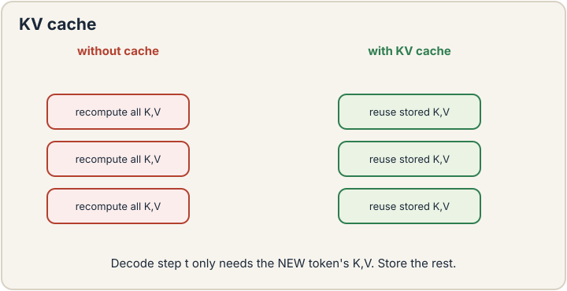
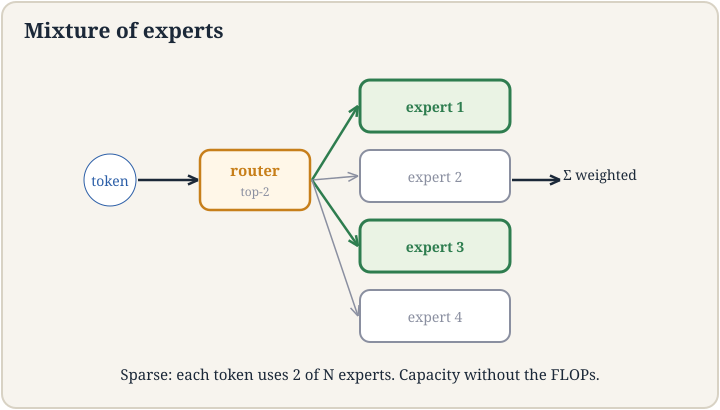
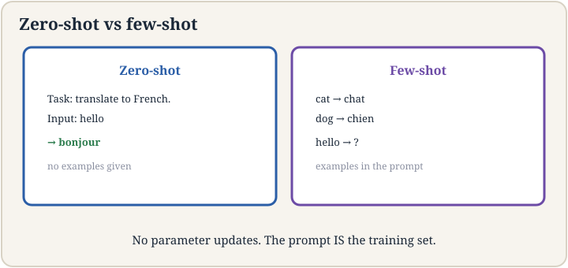
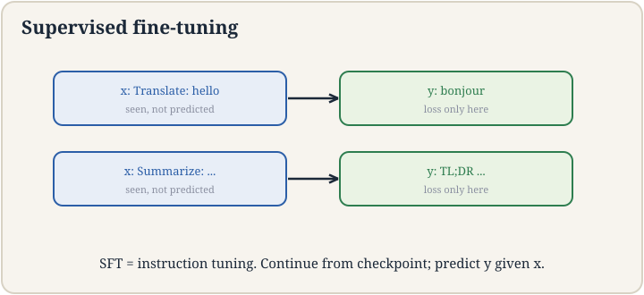

Lecture 15: Attention Variants, In-Context Learning, and SFT
Video blocked (ad-blocker or local file mode).
Watch on YouTubeVideo not loading? Watch on YouTube
Original lecture. Tengyu Ma attacks the quadratic price with KV caching and attention variants, then covers in-context learning and SFT.
The job: serve a million users without a million GPUs
Lecture 14 priced attention at N^2 per forward pass. Generation makes it worse: each new token attends to all previous ones, so naive generation recomputes the whole matrix per token. A 4,096-token answer at 16.7M scores per layer per head per step is unservable. The job: cut the per-token cost, then cut the memory, then ask what the trained model can do without any weight updates at all.
First attempt: recompute everything per token
The naive generator: to produce token 101, run the full transformer on tokens 1-100. To produce token 102, run it on 1-101 from scratch. Token t costs O(t^2). The full answer costs O(N^3). For N = 4,096, that is ~2.3 x 10^10 score computations per layer per head. Nobody serves this. The waste is visible: tokens 1-100 did not change between steps 101 and 102, but every one of their scores was recomputed.
The KV cache
Keys and values for tokens 1-100 are identical whether you are generating token 101 or 102. So save them. The KV cache stores every layer’s keys and values for all past tokens in GPU memory. Generating token t+1 needs only its own query, key, and value: attend the new query to the cached keys, mix the cached values, append the new K/V to the cache. Per-token cost drops from O(t^2) to O(t). The cubic becomes quadratic.

The price is memory. The cache is linear in sequence length T, and the lecture stresses how heavy it is: saving K and V for every head of every layer for one long sequence can fill most of a GPU’s memory. Then batch size collapses: you can serve 10 sequences, not 1,000. Small batches starve the GPU’s compute units (nothing to parallelize across), so inference becomes memory-bound: the GPU waits on memory bandwidth, not arithmetic. The lecture’s chain: KV cache fills memory -> batch shrinks -> parallelism dies -> throughput dies. Reducing the cache is the highest-leverage systems work in LLM serving.
Attention variants: shrink the cache
Grouped-query attention (GQA): share one key/value head across a group of query heads. With 32 query heads and 8 KV heads, the cache shrinks 4x. The queries keep their expressiveness (each still attends differently). Only the stored K/V compress. Quality barely moves. Memory moves a lot.
Mixture of experts (MoE): instead of one big MLP per block, have E expert MLPs and a router that sends each token to the top-k (usually 2). Parameters grow E-fold. Compute per token stays ~flat because each token visits 2 experts. A 8-expert model has 8x the MLP parameters for ~1.1x the compute. The price: the router must balance load (experts starve or flood), and all experts must sit in memory even though each token uses two.

The shock: in-context learning
Now the pivot from systems to behavior. Take the trained model, freeze every weight, and prompt it:
Translate English to French: sea -> mer sky -> ciel cheese ->
The model answers “fromage”. No gradient step. No weight moved. Three examples in the prompt taught it the task. This is in-context learning (ICL): few-shot learning with frozen weights. The lecture presents it as the shock of the GPT-3 era: nobody trained for this. It emerged from next-token prediction at scale.
Why it works, roughly: the prompt’s examples are processed by the same attention machinery as everything else. Attention can implement “find the pattern in the recent examples and continue it”: the query for the blank position matches the example slots, and the values carry the mapping. The model learned, during pre-training, to complete patterns. Few-shot prompts are patterns with a job hidden inside. Scale matters: small models barely do this. Large ones do it reliably. The lecture’s honest note: the mechanism is still partly mysterious, and ICL is brittle: change the example order or wording and accuracy swings.

SFT: teach the format
Pre-trained models complete text. Users want assistants that follow instructions. Supervised fine-tuning (SFT), also called instruction tuning: collect (instruction, response) pairs written by humans, and train the model to predict the response given the instruction, with the usual cross-entropy loss. Ten thousand to a million pairs. The model learns the format of helpfulness: answer the question, be concise, refuse safely.
The lecture’s framing: pre-training teaches the world; SFT teaches the job description. The knowledge comes from pre-training; SFT barely adds facts. What it adds is behavior: which of the many possible completions is the one a user wants. The price: SFT narrows the model. Overdo it and the model forgets things it knew (catastrophic forgetting) or becomes sycophantic. And the pairs are human-written: expensive, slow, and the quality ceiling of the whole step.

The honest price
Efficiency buys servability and pays in complexity: GQA’s sharing, MoE’s routing and load balance, the KV cache’s memory hunger that no variant fully removes. ICL buys task flexibility with zero training and pays in brittleness: prompt wording swings accuracy, long example lists eat the context window, and nobody can fully explain why it works. SFT buys helpful behavior and pays in human hours per pair plus the narrowing tax. The through-line: every step after pre-training is about spending the model’s capability wisely, because the capability itself was the expensive part.
Mapping back
| Idea | Pain it answers | How |
|---|---|---|
| KV cache | Naive generation is O(N^3): recompute everything per token | Cache K/V: per-token O(t^2) -> O(t); memory linear in T |
| Memory-bound serving | Cache fills the GPU: batch of 10, not 1,000 | Diagnosis: memory, not compute, is the bottleneck; parallelism starves |
| GQA | KV cache too big | Share KV heads across query groups: 4x smaller cache, quality holds |
| MoE | Want 8x parameters at 1x compute | Router sends each token to 2 of 8 experts; price: load balance, memory |
| ICL | New task, no training budget | Frozen weights, examples in prompt: “cheese ->” gets “fromage”; brittle but free |
| SFT | Base models complete; users want assistants | (Instruction, response) pairs; teaches the job description, not the world |
During generation, each token’s keys and values never change once computed, so the cache stores them instead of recomputing: per-token cost drops from O(t^2) to O(t). The cache grows linearly with sequence length across every layer and head, and the lecture stresses it can fill most of GPU memory for a single long sequence. Small memory headroom means small batches (10 sequences, not 1,000), which means nothing to parallelize across, so the GPU’s compute units idle waiting on memory bandwidth. Memory-bound, not compute-bound. Grouped-query attention shares each key/value head across a group of query heads: 32 query heads with 8 KV heads cuts the cache 4x. Queries keep their distinct attention patterns. Only the stored keys and values compress. The lecture presents it as the highest-leverage cache diet with minimal quality cost.
The task is encoded in the prompt as examples, and attention implements pattern continuation. For “sea -> mer, sky -> ciel, cheese ->”, the blank position’s query matches the example slots, and the values carry the English-to-French mapping the model must extend. Pre-training on billions of pattern-completion instances taught the machinery. The prompt supplies the pattern. No weights move. The lecture flags the mystery: this was not trained for explicitly, it emerged with scale, and it is brittle to wording and order. When the pattern needs more examples than fit in context, when the task contradicts pre-training priors too strongly, or when the wording buries the pattern. Small models barely do ICL at all: it is a scale-emergent capability. For reliability on a fixed task, SFT or fine-tuning beats prompting.
Behavior, not knowledge. Pre-training teaches the world: facts, language, reasoning patterns. SFT on (instruction, response) pairs teaches the job description: answer the question directly, follow the format, refuse safely. The lecture’s line: pre-training teaches the world, SFT teaches the format of helpfulness. SFT uses 10K-1M human-written pairs, a tiny fraction of pre-training data, because it steers rather than builds. Over-training on the instruction pairs erodes pre-training knowledge: the model gets helpful-shaped but dumber. The narrow pair distribution overwrites broad capabilities. Mitigations: mix pre-training data into SFT, keep SFT short, use low learning rates. It is lecture 6’s bias-variance in new clothes: fit the instructions too hard and lose the world.
Recap: the whole lesson on one screen
- The job. Serve generation without O(N^3) per answer.
- Naive. Recompute everything per token. 2.3 x 10^10 scores per layer per head at N = 4,096. Unservable.
- KV cache. Store K/V: O(t^2) -> O(t) per token. Memory linear in T.
- Memory-bound. Cache fills GPU. Batch collapses to ~10. Compute idles. Shrink the cache = serve more.
- GQA. Share KV heads: 4x smaller cache. MoE. 8 experts, top-2 routing: 8x params, ~1x compute.
- The shock. ICL: frozen weights, “cheese ->” gets “fromage”. Pattern continuation via attention. Brittle, free.
- SFT. (Instruction, response) pairs teach the job description. Knowledge from pre-training. Behavior from SFT.
- The honest price. Systems complexity, prompt brittleness, human hours, the narrowing tax.
Official sources and further reading
Official: - Lecture 15 video, Stanford Online YouTube: https://www.youtube.com/watch?v=hHC-SF3utxg — Tengyu Ma derives the KV cache and its memory-bound serving consequences, presents GQA and MoE, demonstrates in-context few-shot learning, and frames SFT as teaching the job description. - Official subtitle transcript (en-US): the lecture’s spoken text. - CS229 Spring 2026 official course notes (local PDF): the formal treatment.
Caveats from these sources. The KV-cache memory arithmetic (batch of ~10 vs ~1,000) is the lecture’s illustration of the memory-bound regime, not a benchmark. The ICL mechanism (“attention implements pattern continuation”) is the lecture’s rough account of a still-partly-mysterious phenomenon. MoE load balancing is presented as the price, with the details in the literature.
Connections to the other courses
- CS229 L14: the quadratic price this lesson attacks. The transformer block being served.
- CS229 L12: pre-training: the capability SFT steers and ICL exploits.
- CS229 L17: RL: the next step after SFT in the post-training stack.
- CS336: the systems half: parallelism, batching, and serving infrastructure for the KV cache era.
- CS224N: instruction tuning and few-shot prompting from the NLP side.
Sources
- VIDEOLecture 15 video, Stanford Online YouTube
- NOTESOfficial subtitle transcript (en-US)
- NOTESCS229 Spring 2026 official course notes (local PDF)